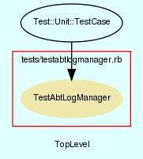

|  |
TestAbtLogManager.rb
Unit testing for AbtLogManager class.
Created by Eric D. Schabell <erics@abtlinux.org> Copyright 2006, GPL.
This file is part of AbTLinux.
AbTLinux is free software; you can redistribute it and/or modify it under the terms of the GNU General Public License as published by the Free Software Foundation; either version 2 of the License, or (at your option) any later version.
AbTLinux is distributed in the hope that it will be useful, but WITHOUT ANY WARRANTY; without even the implied warranty of MERCHANTABILITY or FITNESS FOR A PARTICULAR PURPOSE. See the GNU General Public License for more details.
You should have received a copy of the GNU General Public License along with AbTLinux; if not, write to the Free Software Foundation, Inc., 51 Franklin St, Fifth Floor, Boston, MA 02110-1301 USA
- setup
- testCachePackage
- testLogPackageBuild
- testLogPackageInstall
- testLogPackageIntegrity
- testLogToJournal
setup method for testing AbtLogManager.
[ show source ]
# File TestAbtLogManager.rb, line 36
36: def setup
37: @log = AbtLogManager.new()
38: end
Test method for ‘AbtLogManager.testCachePackage()’
[ show source ]
# File TestAbtLogManager.rb, line 65
65: def testCachePackage()
66: assert( @log.cachePackage( "fortune" ), "testCachePackage()" )
67: end
Test method for ‘AbtLogManager.testLogPackageBuild()’
[ show source ]
# File TestAbtLogManager.rb, line 58
58: def testLogPackageBuild()
59: assert( @log.logPackageBuild( "fortune" ), "testLogPackageBuild()" )
60: end
Test method for ‘AbtLogManager.testLogPackageInstall()’
[ show source ]
# File TestAbtLogManager.rb, line 51
51: def testLogPackageInstall()
52: assert( @log.logPackageInstall( "fortune" ), "testLogPackageInstall()" )
53: end
Test method for ‘AbtLogManager.testLogPackageIntegrity()’
[ show source ]
# File TestAbtLogManager.rb, line 43
43: def testLogPackageIntegrity()
44: #assert( @log.logPackageIntegrity( "fortune" ), "testLogPackageIntegrity()" )
45: assert( false, "testLogPackageIntegrity()" )
46: end
Test method for ‘AbtLogManager.testLogToJournal()’
[ show source ]
# File TestAbtLogManager.rb, line 72
72: def testLogToJournal()
73: assert( @log.logToJournal( "Test message from AbtTestSuite." ), "testLogToJournal()" )
74: end